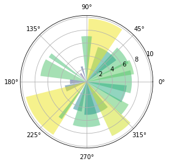

Установка необходимых инструментов и настройка среды¶
Автор(ы)
Установка Python¶
Быстрее всего (как минимум в символах и сразу для всех платформ) рассказать как установить Python, потребуется
- зайти на официальный сайт Python
- во вкладке «Downloads» выбрать нужную платформу (Linux, macOS, Windows)
- скачать релиз (для начала советуем использовать стабильную версию, к примеру,
3.10.6на момент когда эта лекция пишется)
Между тем
Python для Linux и macOS предустановлен, но он довольно старый, ещё 2 версия, которая уже как не поддерживается.
Установка виртуального окружения 1¶
При разработке Python-приложений или использовании решений на Python, созданных другими разработчиками, может возникнуть ряд проблем, связанных с использованием библиотек различных версий, к примеру:
- различные приложения могут использовать одну и туже библиотеку, но при этом требуемые версии могут отличаться
- может возникнуть необходимость в том, чтобы запретить вносить изменения в приложение на уровне библиотек, к примеру, установили приложение и хотите, чтобы оно работало независимо от того обновляются библиотеки или нет. Как понимаете, если оно будет использовать библиотеки из глобального хранилища (
/usr/lib/python3/site-packages/), то, со временем, могут возникнуть проблемы - просто может не быть доступа к директории
/usr/lib/python3/site-packages/
Для решения данных вопросов используется подход, основанный на построении виртуальных окружений – своего рода песочниц, в рамках которых запускается приложение со своими библиотеками, обновление и изменение которых не затронет другие приложение, использующие те же библиотеки.
ПО позволяющее создавать виртуальное окружение¶
Программное обеспечение, которое позволяет создавать виртуальные окружения в Python можно разделить на те, что входят в стандартную библиотеку Python и не входят в неё. Сделаем краткий обзор доступных инструментов (хороший пост на эту тем есть на stackoverflow).
Начнем с инструментов, которые входят в PyPI – Python Package Index – репозиторий пакетов Python, доступный для любого разработчика и пользователя Python.
virtualenv-
Это, наверное, одни из самых популярных инструментов, позволяющих создавать виртуальные окружения. Он прост в установке и использовании. В сети довольно много руководств по virtualenv. Этот инструмент нужно обязательно освоить, как минимум, потому что описание развертывания и использования многих систем, созданных с использованием Python, включает в себя процесс создания виртуального окружения с помощью virtualenv.
pyenv-
Инструмент для изоляции версий Python. Чаще всего применяется, когда на одной машине вам нужно иметь несколько версий интерпретатора.
virtualenvwrapper-
Это обертка для
virtualenvпозволяющая хранить все изолированные окружения в одном месте, создавать их, копировать и удалять. Предоставляет удобный способ переключения между окружениями и возможность расширять функционал за счет плагинов. Существуют ещё инструменты и плагины, выполняющие работу по изоляции частей системы Python. venv-
Этот модуль появился в Python3 и не может быть использован для решения задачи изоляции в Python2. По своему функционалу очень похож на
virtualenv. Если вы работаете с третьим Python, то можете смело использовать данный инструмент. poetry,pipenv,pipx..-
И это ещё не все, которые также отвечают за виртуальное окружение, с которыми предлагаем ознакомится самим.
virtualenv как пример¶
Установка¶
virtualenv можно установить с использованием менеджера pip, либо скачать исходные коды проекта и установить приложение вручную.
Установка с помощью pip через командную строку
Создание виртуального окружения¶
Происходит следующей командой
-p python3.10– с помощью флага-pуказываем версию Python окружения (3.10)env_py310– имя окружения
Другие флаги
Для просмотра доступных флагов нужно к команде добавить --help; для virtualenv это
После выполнения данной команды, в текущей директории будет создана новая директория с именем env_py310, где
-
env_py310/bin/– содержит скрипты для активации/деактивации окружения, интерпретатор Python, используемый в рамках данного окружения, менеджерpipи ещё несколько инструментов, обеспечивающих работу с пакетами Python. В Windows, это директорияenv_py310\Scripts\ -
env_py310/include/иenv_py310/lib/– директории, содержащие библиотечные файлы окружения. Новые пакеты будут установлены в директориюenv_py310/lib/python3.10/site-packages/
Активация виртуального окружения¶
Для активации виртуального окружения воспользуйтесь командой (для Linux и macOS):
Что делает source
Команда source выполняет bash-скрипт без запуска второго bash-процесса.
Если команда выполнилась успешно, то перед приглашением в командной строке появилась дополнительная надпись, совпадающая с именем виртуального окружения.
При этом в переменную окружения PATH, в самое начало, будет добавлен путь до директории bin, созданного env_py310/ (символом / обозначают что это директория).
--system-site-packages
При создании виртуального окружения с флагом
то в рамках окружения env_py310 будете иметь доступ к глобальному хранилищу пакетов:
/usr/lib/python3.10/site-packages/(Linux, macOS)\Python3.10\Lib\site-packages\(Windows)
Деактивация виртуального окружения¶
Для выхода из виртуального окружения, введите команду
Установка Jupyter¶
Для установки классического Jupyter Notebook выполнить
Для запуска
{kind=link}
Перейдите по одной из ссылок (если не перекинула само), в которых есть слово token – они начинаются с http://localhost или http://127.0.0.1. В браузере откроется страница с обзором директории, из которой был запущен Jupyter Notebook. Если в дальнейшем хотите хранить все свои результаты в другом месте, то перед запуском команды с помощью уже указанной инструкции в терминале cd <путь/до/директории> перейдите к ней.
Для создания нового файла – блокнота, как его еще называют («почему?», – узнаете в следующей лекции) – кликните по кнопке New в правом верхнем углу, а затем – по Python 3 (возможно будет какая-нить приставка, это штатно).
{kind=link}
Для завершения проверки скопируйте код ниже в тетрадку в браузере, а затем нажмите Ctrl+Enter (Cmd+Enter для macOS) (это заставит код выполниться, подробнее дальше в курсе). Если увидите график - то все в полном порядке!
{kind=link}

Не переживайте, этот код не нужно разбирать сейчас – просто убеждаемся, что все работает согласно задумке. Если что-то не так, пересмотрите все ли сделали согласно инструкции; если да и не воспроизводится, то задавайте вопрос в канале курса
jupyterlab¶
Модернизированная версия Jupyter Notebook смахивающая в какой-то мере на полноценную среду разработки (с тёмной темой), где одновременно можно работать с несколькими файлами, а не в отдельных вкладках как в классическом.
Для установки
Запустить
Горячо рекомендуем использовать его, ну или привыкать работать с IDE JetBrains PyCharm, VSCode и т.д.
colab¶
Collaboratory или Colab от Google Research – размещенный Jupyter – который используется для написания и запуска преимущественно Python из браузера, то есть вычисления происходят целиком и полностью в облаке, требуется лишь наличие стабильного интернета. Также имеются бесплатные GPU и TPU, но c ограничениями как и сами аппаратные ресурсы: не сможете создавать проекты, требующие большого объема вычислений. Также можно делиться созданными блокнотами (Jupyter Notebooks) по необходимости.
Более детально советуем ознакомиться с Google Colab – Краткое руководство.
Установка git¶
Git – система контроля версий. Этот инструмент часто используется для совместной разработки программ (и не только!) группой людей, каждый из которых работает над своей отдельной проблемой. Так, например, этот курс был создан с помощью git, и каждый автор работал с отдельной копией, создавая набор лекций. А затем все копии собрались в одну книгу, которую читаете. Пара учебных материалов по работе с git:
Инструкция для Linux¶
Fedora¶
Или другой похожий дистрибутив, такой как RHEL или CentOS, можно воспользоваться dnf:
Debian¶
Например, Ubuntu, попробуйте apt:
Чтобы воспользоваться дополнительными возможностями, посмотрите инструкцию по установке для нескольких различных разновидностей Unix на сайте git-scm.com/download/linux.
Инструкция для macOS¶
Xcode CLI¶
Самый простой способ – установить Xcode Command Line Tools. Нужно выполнить
и если git не установлен, будет предложено это произвести.
brew¶
Тут необходимо установить менеджер пакетов - brew. По ссылке найдете инструкцию и более детальное описание, чем он является. Необходимо выполнить в терминале команду:
Внимание
Скорее всего, для выполнения этой команды, нужно задействовать команду sudo, это вполне нормальная история.
Для установки самого git выполнить
Инструкция для Windows¶
Официальная сборка¶
Официальная сборка доступна на сайте git – отдельный проект, называемый git для Windows. Для дополнительной информации перейдите на gitforwindows.org
chocolatey¶
Для автоматической установки можете использовать пакет git chocolatey (учтите, он поддерживается сообществом).
Проверка установки¶
Выполните
К примеру, если получите что-то вида git version 2.36.2 -- всё прошло успешно.
Копирование репозитория курса¶
Для примера, дабы скопировать репозиторий этой книги, нужно зайти на его страницу в GitHub (имеются и другие подобные системы) курса.
Затем найдите кнопку с текстом < > Code и кликните по ней. В открывшемся окне убедитесь, что выбрана вкладка HTTPS, а не SSH или GitHub CLI. Скопируйте предложенную ссылку (это такое же, если скопировать ссылку вкладки браузера). После зайдите в терминал в нужную директорию и выполните
После чего появится директория pycourse/. Это можно увидеть через команду ls (только для Linux и macOS).
Для того, чтобы зайти в директорию, потребуется выполнить команду (change directory, сменить директорию)
-
«Виртуальные окружения. Подробная инструкция на Python.», серия «Python.Уроки» от UPROGER. https://uproger.com/virtualnye-okruzheniya-podrobnaya-instrukcziya-na-python/ ↩